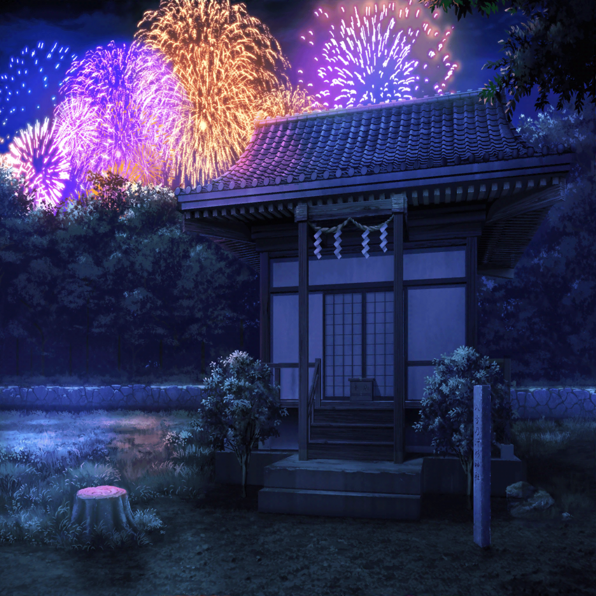

有咲の秘密の場所
香澄
ね～、有咲～。
そんなところでひとりで見てないでさ、
こっちで私と一緒に花火見ようよ！
有咲
私はひとりで見たいんだから、ここでいいんだよ
香澄
……わかった！
そうしたら、私がそっちに行っちゃおーっと！
有咲
はぁ！？
香澄
は～い！
隣、失礼しま～す♪
有咲
ちょっ、寄りかかるな！？
暑苦しいだろーがっ！
香澄
とか言って、
有咲だってホントは私に来てほしかったくせに～
有咲
なんだ、その根拠のない自信は！？
香澄
根拠はあるもん！
有咲、私に寄りかかられても、
口だけで逃げようとしなかったじゃん
有咲
そ、それはっ、
お前が抱きつくから逃げられなかっただけで……！
香澄
わ～、すご～い！
有咲、見て見て！
あの花火、ずっと光が消えないで、下の方に流れていくみたい！
有咲
あれは、しだれ柳っていう名前の花火だよ
香澄
へ？
し、しだれ……？ な、何っ？
有咲
ほら、見てみ。
花火の光が柳みたいな形で広がって落ちてくだろ？
だから、しだれ柳って呼ばれてるの
香澄
す、すご～い！
有咲って、花火に詳しいんだ！
有咲
詳しいつーか、
こんなの一般常識の範囲だろ？
香澄
……あ！
それじゃあさ、花火が上がる時の掛け声ってあるじゃん！
は～～なや～～！ みたいな、感じの……
有咲
……はぁぁ～
香澄
あれ？ 違った？
八百屋？？
有咲
んなわけねーだろ！
『たまや、かぎや』だ！
香澄
そう、それ！
香澄
ずっと疑問だったんだけど……
あれはなんで『たまや、かぎや』って言うの？
有咲
ん～、たしか江戸時代に『玉屋』と『鍵屋』っていう
ふたりの花火師がいて、花火の見物客がよかった方の名前を
掛け声にしたところからはじまっ……
香澄
た～～～まや～～～！
有咲
人の話を最後まで聞けっ！
香澄
ねえねえ、次に花火が上がったらさ、
有咲も一緒に叫ぼうよ。
『た～～～まや～～～！』って
有咲
は、はぁ？ 絶対ヤダ！
香澄
えぇ～、いいじゃんやってみようよ～！
有咲
恥ずかしいから、絶対ヤダって言ったらヤダ！
それに実際、いないから！
花火が上がって『た～まや～』って言うやつなんかっ！
香澄
１回だけ！ １回だけだから！
有咲
な、なんだよ、その意味不明な情熱は？
香澄
なんか、そういう気分なの！
ねぇ、さーや達もいいでしょ？
沙綾
……ん？ 呼んだ？
香澄
一緒に花火に向かって叫ぼう？
『た～～まや～～～っ！』って。
私は今、みんなと一緒にいるぞーってことを表現したいの！
沙綾
みんなと一緒にいるってことを表現……
あはは、香澄の気持ち、ちょっとだけわかる気がする。
うん、いいよ！ その提案、乗った！
有咲
ま、マジか、沙綾っ
香澄
わ、わわっ！
ほら、花火が上がったよ！
いっくよ～！
香澄・沙綾
た～～～～まや～～～！
有咲
た、たまや……
香澄
わわわっ！
次来たよっ！
香澄・沙綾
か～～～ぎや～～～！
沙綾
あ！ いいこと思いついちゃった！
せ～の……
沙綾
ぱ～～～んや～～～！
有咲
ぱ、パン屋ってっ！？
香澄
えへへ、それじゃあ、最後は……
香澄
さ～～～あや～～～！
有咲
さ、沙綾って……ぷっ！
有咲
ぷはははは……！
なんだそれ！ くっだらねーな！
はは、あはははは……！
沙綾
ふふっ、みんなで見られてよかったね、有咲？
香澄
有咲のおかげで、とっても花火がきれいに見ることができるよ！
ありがとね！
有咲
ふふ～ん、当然だろ♪
なんたって、ここは私の秘密の場所だからな！
花火大会終了後
香澄
はぁ～、花火大会終わっちゃったね……
なんか、本当に幸せな時間だったな～
香澄
ねえねえ、有咲はさ、どの花火が一番よかった？
私はね、やっぱり……
沙綾
香澄。
あまり遅くなっちゃうといけないから、
そろそろ帰ろ？
有咲
いや、今はちょっと待った方がいいかも。
ほら、終わったばっかりだから、人がまたすごいし……
香澄
大丈夫だよ、こうすれば！
……はい、手！
はぐれないようにつなご♪
有咲
また、それかよ……
香澄って、ホントに手をつなぐの好きだな～
香澄
いいじゃん！
ほら、みんなでつないで帰ろーよ！
早く早く～！
有咲
……ったく、しゃ、しゃーねーなー
有咲
……ほら、これで満足か？
香澄
うん♪ 大満足っ！
それじゃあ、みんなで縁日にレッツ・ゴ～！
有咲
帰るんじゃないのかよ！？